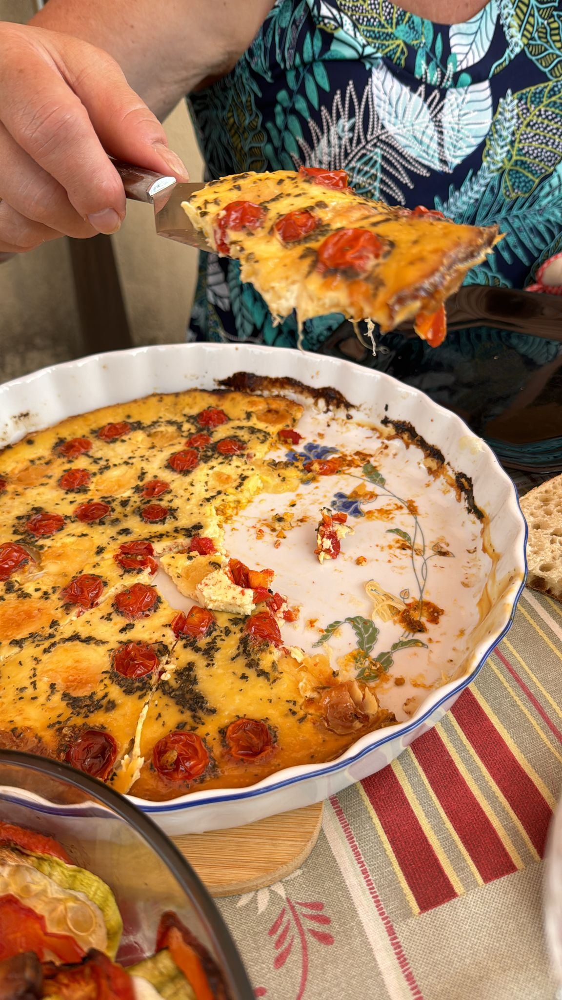

Clafoutis salado de tomates cherry
Ingredientes
6×
- 6 huevos
- 200 ml de nata o leche
- 2 cdas de harina
- 80 g de queso rallado
- sal
- pimienta
- 250 g de tomates cherry
- orégano o albahaca secos

Preparación
Paso 1
Batir 6 huevos con 200 ml de nata o leche, 2 cdas de harina, 80 g de queso rallado, sal y pimienta.
Paso 2
Verter en una fuente redonda engrasada y repartir por encima 250 g de tomates cherry partidos por la mitad.
Paso 3
Espolvorear con orégano o albahaca secos y hornear 35min a 180ºC, hasta que esté cuajado y dorado.